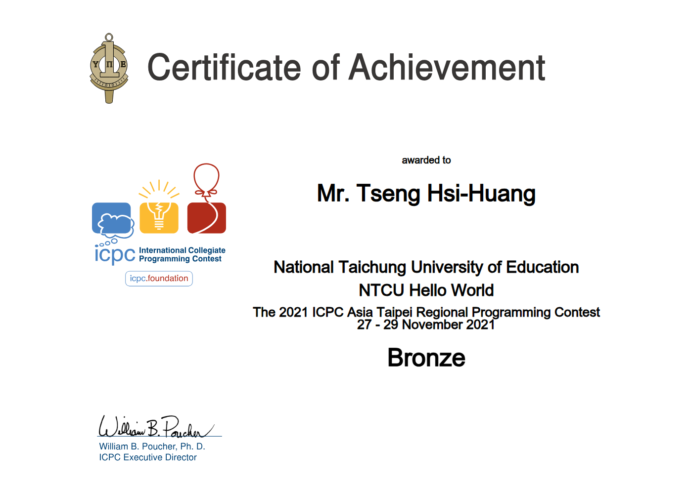
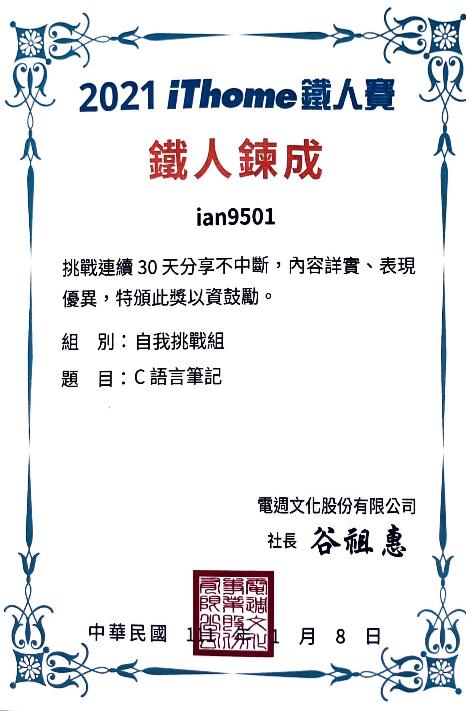
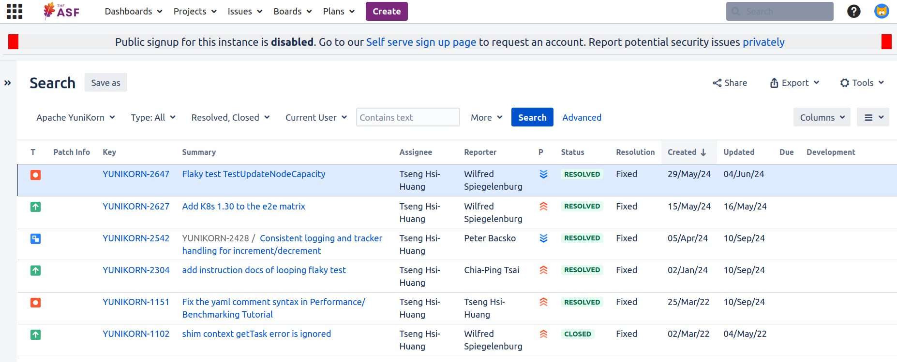

曾喜煌
學歷：
- 國立臺中教育大學 資訊工程學系 學士 (2019/09 ~ 2023/06)
- 國立臺中教育大學 資訊工程學系 碩士 (2023/09 ~ 2025/07)
專長：
C, C++, Linux, Shell, Makefile, gdb, Golang, Kubernetes, Docker, Dockerfile
專業技能
Linux
- 從大一開始把筆電灌成 Linux，長期並持續使用的情況下，熟悉 Linux 的命令操作
- 曾經使用 Ubuntu, Debian, CentOS, Arch, 等等的 Linux 發行版
- 習慣且熟悉使用 tmux + vim 作為我的開發環境
C Language and System Software
- 2021 iThome 鐵人賽以「C 語言筆記」作為主題並完賽
- 自學 MIT 的作業系統課程 6.1810: Operating System Engineering 並寫成系列文章 xv6 學習紀錄
- 會使用
gdb做 debugging- 硬體環境：以
qemu做模擬 - OS: xv6
- 硬體環境：以
Cloud Computing
- 大學專題與研究所的研究領域
- Apache Yunikorn contributor
作品集與個人經歷
xv6 學習紀錄
系列文章連結：xv6 學習紀錄

The 2021 Taiwan Online Programming Contest

The 2021 ICPC Asia Taipei Regional Programming Contest

2021 iThome 鐵人賽 (主題: C 語言筆記)
系列文章連結：C 語言筆記 
這個網站的誕生
把網站的開發筆記放在這個網站本身，
這是個雞生蛋、蛋生雞的問題。
系列文章連結：這個網站的誕生
LeetCode 解題
系列文章連結：LeetCode 解題
Apache Yunikorn contributor
Contact Me
- Email: yama.tseng@gmail.com
- GitHub: @9501sam
- IT 邦幫忙: https://ithelp.ithome.com.tw/users/20137780